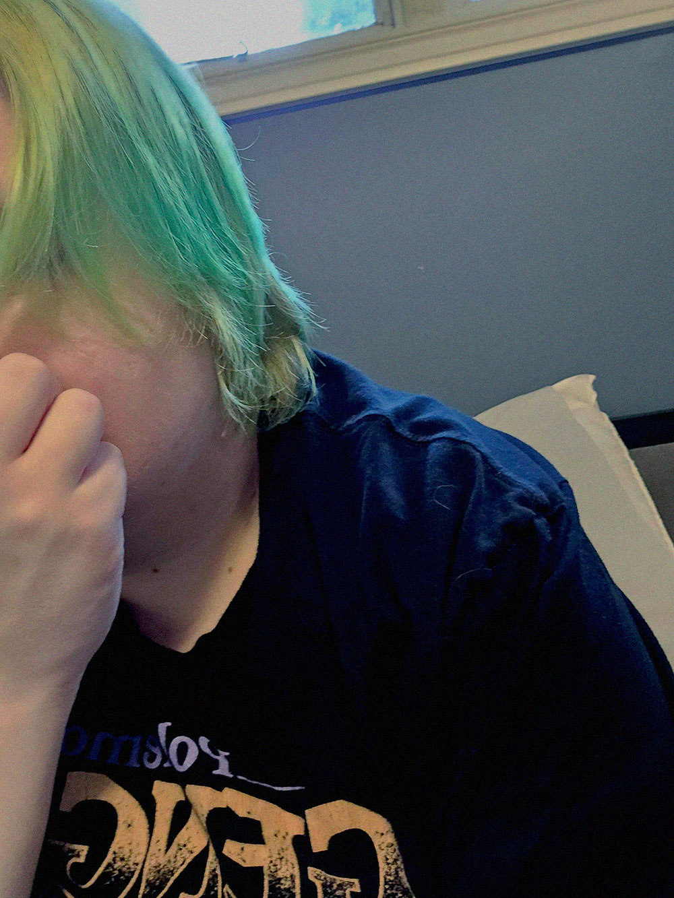

I don’t understand what the fuck is wrong with me. Why do I always do this?
We all know that I go to this stupid queer support group at the request of my therapist. She thinks that getting to know people my age would help me, but what good does that do if everyone hates me?
Today, they just kept pushing me and pushing me until I snapped. I might have gone overboard and been harsh about what I was saying. I let loose about how unlovable of a person I am and how everyone probably wished I wasn’t there. So… yeah.
Some days I really think I should just kill myself. Should I be giving a trigger warning for this? Not like anyone will actually read this blog. Self-indulgent writing, once again, at the suggestion of my therapist.
For once, I wish someone would show some sort of interest in me… I guess I shouldn’t be saying that.
Someone came into the comic book shop today. I know, absolutely insane /s. Anyways, he was like, really pushing the idea of being friends with me. But I told him off that it was better that he stayed away.
He was a sweet looking guy, you know, the traditional fluffy haired gamer boy aesthetic. I didn’t feel like it was fair for me to corrupt him and destroy his world by being in it. Because that’s what I do. Benji told me so. I obviously have ruined his life. But at least he’s still there for me, sort of.
He’s such a dismissive prick sometimes though omg. Like how am I supposed to rely on him when he just validates the bullshit that I’m saying? My therapist says that I’m not as bad as I think I am, but she doesn’t know the real me. She only knows the person that I perform every time I’m in therapy with her. Benji knows the real me. He knows how fucking terrible I am.
Anyways, I guess that’s it. Life sucks like usual, but at least I’m getting my homework done. It’s the least I can do after my parents spent so much money on my classes. I wonder when classes will get harder. Level 100 really is nothing to cry over.
Cedar